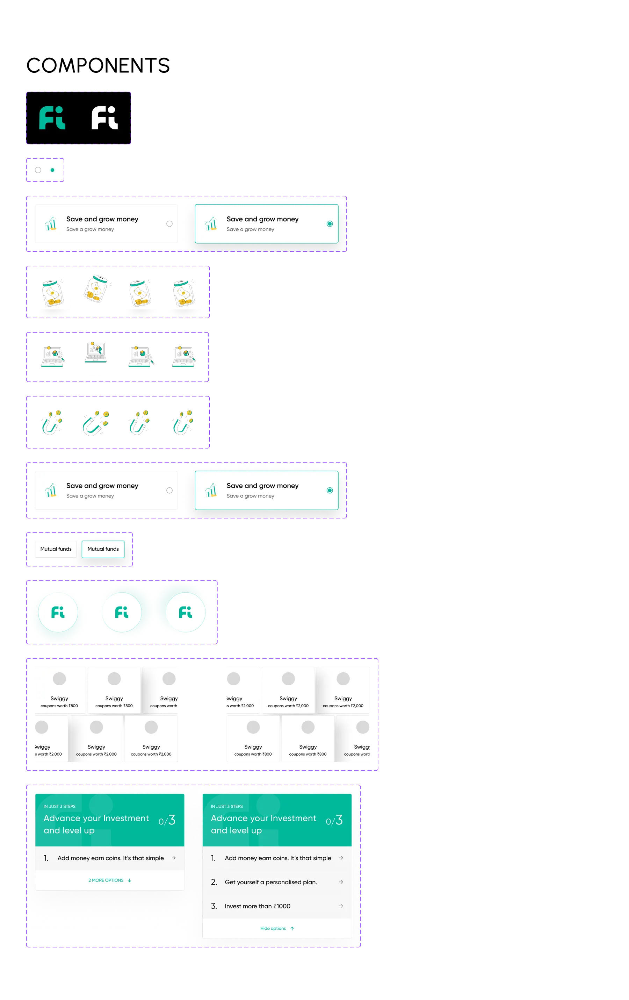
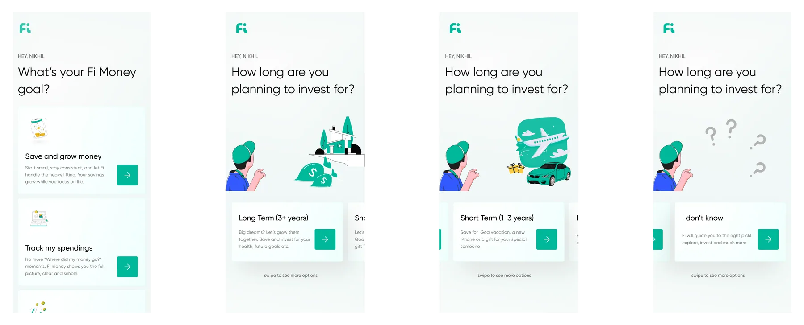
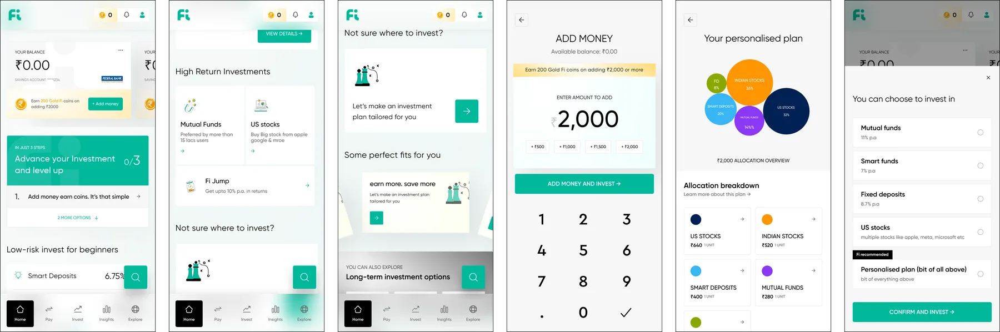

Problem Statement
Redesign the fi money app's UI/UX in light mode to establish a unique and beneficial design language that might help the backend finance security and trust, while also creating a delightful and user-friendly experience.
How Might We
How might we redesign fi money's experience so it feels secure and trustworthy, while still being delightful and engaging enough to keep users coming back?
Onboarding
How might we design the onboarding process so that it feels trustworthy and helps users get started while feeling confident in the app's security and features?
Home screen
How might we create the home screen to allow users to easily manage their finances while continuing to keep the engaging design language throughout?
Gamification
How might we introduce gamified elements into the financial learning flows to incentivise users to visit and achieve their financial goals in ways that are both fun and rewarding?
Business Goals
Differentiate Fi Money in the competitive digital banking market by establishing a unique and delightful light-mode design language that enhances user engagement and trust. By making the app visually appealing and easy to use, Fi Money aims to attract more users and increase customer retention, ultimately driving growth and loyalty.
User Goals
The user goal is to have a financial app that not only feels secure and trustworthy but is also enjoyable and easy to use. Users want to manage their savings, top up their accounts, and plan their finances in a way that's not only straightforward but also a little bit fun, thanks to engaging and delightful design touches. This way, you have a clear business and user perspective guiding your design decisions.
Design Language
Typography: Gilroy — Regular, Medium, SemiBold. A clean, modern typeface that feels both financial and approachable. Color system built around black, white, amber, blue, and green — trust and energy in balance.

Onboarding — Questionnaire
A conversational questionnaire that personalises the fi money experience before the user even reaches the home screen. Each question is focused, friendly, and sets expectations clearly — building trust from the first interaction.

Home Screen
The home screen surfaces what matters most — account balance, recent activity, and quick actions — while keeping the design clean and light. The personalised layout makes fi feel like it was built for you specifically.
Add Money & Invest
The investment flow is designed to feel simple and approachable — removing the anxiety typically associated with financial decisions. Clear visual hierarchy, familiar patterns, and a light aesthetic make adding money and investing feel natural.
App Screens
